Previous slide Next slide Toggle fullscreen Open presenter view
CEN429 Güvenli Programlama · Hafta 12
Güvenlik Sertifikasyonları ve Sızma Testi Planlaması
CEN429 Güvenli Programlama — Hafta 12
Dr. Öğr. Üyesi Uğur CORUH · 04.12.2026
RTEÜ Bilgisayar Mühendisliği · 2026-2027 Güz
CEN429 Güvenli Programlama · Hafta 12
Bugünün planı (3 saat)
Saat
Bölüm
Konu
1
0–1
Temel kavramlar · neden bağımsız değerlendirme · standartlar · 13 adım
2
2–3
Zafiyet değerlendirmesi yöntemleri · standart testleri · saldırı potansiyeli
3
4–5
Sızma testi planı · test kartı · raporlama · proje S16
RTEÜ Bilgisayar Mühendisliği · 2026-2027 Güz
CEN429 Güvenli Programlama · Hafta 12
Kısa tarihçe — değerlendirme ve sertifikasyon
1985 — TCSEC ("Orange Book"): ilk resmi değerlendirme ölçütleri1991–93 — Avrupa ITSEC , Kanada CTCPEC 1999 — Ortak Kriterler (ISO/IEC 15408) ; EAL ölçeği buradan2001 OWASP · PTES/NIST SP 800-115 · 2005→2023 CVSS (v2→v4.0)2010'lar — MASVS/MASTG (mobil), ETSI EN 303 645 (IoT)
Tek cümle: üretici kendi ürününü onaylayamaz — bağımsız, kanıta dayalı değerlendirme.
RTEÜ Bilgisayar Mühendisliği · 2026-2027 Güz
CEN429 Güvenli Programlama · Hafta 12
Bu hafta nereye oturuyor?
4–11. haftalar: korumaları öğrendik (bellek, kripto, gizleme, whitebox…)Bu hafta (12): peki bu korumalar gerçekten çalışıyor mu ? Nasıl sınanır ?13. hafta: güvenlik gereksinimleri ve uyum matrisi
Bugün: bağımsız değerlendirme + sızma testi planlama.
RTEÜ Bilgisayar Mühendisliği · 2026-2027 Güz
CEN429 Güvenli Programlama · Hafta 12
Öğrenme çıktısı
Bu hafta ÖÇ.6 / ÖÇ.7 (test/doğrulama, standartlar) üstünedir.
Sonunda yapabileceğiniz:
Bağımsız değerlendirmenin adımlarını anlatmak
Bir sızma testi planı yazmak
Bir bulguyu derecelendirmek (saldırı potansiyeli, CVSS)
RTEÜ Bilgisayar Mühendisliği · 2026-2027 Güz
CEN429 Güvenli Programlama · Hafta 12
⚠️ Etik ve hukuki çerçeve (baştan)
Sızma testi yazılı izin ve kapsamı açıkça tanımlı bir sözleşme olmadan yapılamaz .
İzinsiz test, amacı ne olursa olsun suçtur .
Bu derste test yalnız kendi projeniz üzerinde yapılır.
Bütün veriler sentetik ; gerçek kişisel veri yok.
RTEÜ Bilgisayar Mühendisliği · 2026-2027 Güz
CEN429 Güvenli Programlama · Hafta 12
0. Temel kavramlar (sıfırdan)
RTEÜ Bilgisayar Mühendisliği · 2026-2027 Güz
CEN429 Güvenli Programlama · Hafta 12
Neden bu bölüm?
Bu hafta "değerlendirme", "sertifikasyon", "sızma testi" gibi terimler geçecek.
Önce hepsini tek tek tanımlayalım ki konu havada kalmasın.
RTEÜ Bilgisayar Mühendisliği · 2026-2027 Güz
CEN429 Güvenli Programlama · Hafta 12
Güvenlik değerlendirmesi nedir?
Güvenlik değerlendirmesi: bir ürünün güvenlik iddialarının bağımsız biri tarafından sınanması ."Ben güvenliyim" demek yetmez; kanıt ve test gerekir.
RTEÜ Bilgisayar Mühendisliği · 2026-2027 Güz
CEN429 Güvenli Programlama · Hafta 12
Sertifikasyon nedir?
Sertifikasyon: bir ürünün/kurumun belirli bir standarda uyduğunun, yetkili bir tarafça belgelenmesi .Değerlendirme başarılıysa bir sertifika verilir.
RTEÜ Bilgisayar Mühendisliği · 2026-2027 Güz
CEN429 Güvenli Programlama · Hafta 12
Laboratuvar (değerlendirici) kim?
Değerlendirme laboratuvarı: ürünü sınayan bağımsız, akredite kuruluş.Ürünü geliştiren değildir (tarafsızlık için).
Bütün kaynak koda ve belgeye erişir.
RTEÜ Bilgisayar Mühendisliği · 2026-2027 Güz
CEN429 Güvenli Programlama · Hafta 12
Standart nedir?
Standart: neyin nasıl yapılacağını belirleyen ortak kurallar bütünü.Örnek: ISO/IEC 27001, Ortak Kriterler, FIPS 140-3, PCI, OWASP MASVS.
Her biri farklı şeyi ölçer (birazdan).
RTEÜ Bilgisayar Mühendisliği · 2026-2027 Güz
CEN429 Güvenli Programlama · Hafta 12
Zafiyet (vulnerability) nedir?
Zafiyet: bir sistemde kötüye kullanılabilecek zayıf nokta (ör. sınır denetimsiz tampon).Zafiyet + kötüye kullanım = güvenlik olayı.
RTEÜ Bilgisayar Mühendisliği · 2026-2027 Güz
CEN429 Güvenli Programlama · Hafta 12
Bulgu (finding) nedir?
Bulgu: değerlendirmede tespit edilen bir sorun ya da iyileştirme noktası.Her bulgu için: kanıt, ciddiyet, öneri .
RTEÜ Bilgisayar Mühendisliği · 2026-2027 Güz
CEN429 Güvenli Programlama · Hafta 12
Beyaz kutu vs kara kutu test
Beyaz kutu test: test eden kaynak koda + belgeye sahip.Kara kutu test: test eden yalnız dışarıdan (kullanıcı gibi) erişir.Değerlendirici genelde beyaz kutu çalışır (her şeyi görür).
RTEÜ Bilgisayar Mühendisliği · 2026-2027 Güz
CEN429 Güvenli Programlama · Hafta 12
SAST nedir?
SAST (Static Application Security Testing): kaynağı çalıştırmadan analiz eden araç.Tehlikeli kalıpları, olası bellek hatalarını bulur.
Hızlı ve geniş; ama yanlış pozitif üretir.
(4. haftada "statik analiz" olarak gördük.)
RTEÜ Bilgisayar Mühendisliği · 2026-2027 Güz
CEN429 Güvenli Programlama · Hafta 12
DAST nedir?
DAST (Dynamic Application Security Testing): programı çalıştırırken sınar.Bellek erişim hataları, tanımsız davranışları yakalar (ör. sanitizer'lar).
(4. haftada ASan/UBSan.)
RTEÜ Bilgisayar Mühendisliği · 2026-2027 Güz
CEN429 Güvenli Programlama · Hafta 12
Fuzzing nedir?
Fuzzing: programa beklenmeyen/rastgele girdiler verip çökme/bozulma aramak.İnsanın aklına gelmeyen girdileri bulur.
(4. haftada libFuzzer/AFL kavramı.)
RTEÜ Bilgisayar Mühendisliği · 2026-2027 Güz
CEN429 Güvenli Programlama · Hafta 12
Sızma testi (pentest) nedir?
Sızma testi (penetration test): bir saldırganın bakışıyla, izinli ve planlı olarak sistemi aşmayı denemek.Yukarıdaki yöntemleri birleştirir ; en son ve en pahalı adımdır.
RTEÜ Bilgisayar Mühendisliği · 2026-2027 Güz
CEN429 Güvenli Programlama · Hafta 12
TOE nedir?
TOE (Target of Evaluation): değerlendirilen tam olarak ne ?Ortak Kriterler terimidir.
Benzersiz tanımlanır: sürüm + ikili + kaynak + özet değeri.
RTEÜ Bilgisayar Mühendisliği · 2026-2027 Güz
CEN429 Güvenli Programlama · Hafta 12
CVSS nedir?
CVSS (Common Vulnerability Scoring System): bir zafiyetin etkisini standart bir puanla (0–10) ifade eder.Yüksek puan = daha ciddi etki.
Önceliklendirmede kullanılır.
RTEÜ Bilgisayar Mühendisliği · 2026-2027 Güz
CEN429 Güvenli Programlama · Hafta 12
Saldırı potansiyeli nedir?
Saldırı potansiyeli: bir saldırıyı gerçekleştirmenin ne kadar zor olduğu.Süre, uzmanlık, ekipman gibi faktörlerle puanlanır.
Düşük potansiyel (kolay saldırı) = ciddi bulgu.
RTEÜ Bilgisayar Mühendisliği · 2026-2027 Güz
CEN429 Güvenli Programlama · Hafta 12
Saldırı potansiyeli — beş faktör
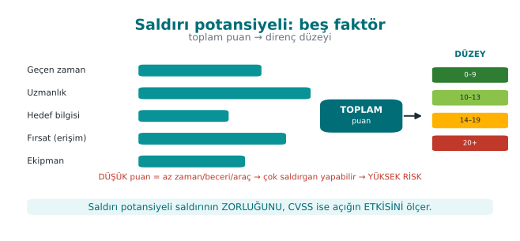
RTEÜ Bilgisayar Mühendisliği · 2026-2027 Güz
CEN429 Güvenli Programlama · Hafta 12
Etki analizi ve delta değerlendirme
Güvenlik etki analizi: bir değişikliğin güvenlik etkisini belgeleyen rapor.Delta değerlendirme: yalnız değişen kısmın yeniden değerlendirilmesi.
Bunları 5. bölümde ayrıntılı göreceğiz.
RTEÜ Bilgisayar Mühendisliği · 2026-2027 Güz
CEN429 Güvenli Programlama · Hafta 12
Şimdi hazırız
Bildiğimiz terimler:
değerlendirme · sertifikasyon · laboratuvar · standart · zafiyet · bulgu · beyaz/kara kutu · SAST · DAST · fuzzing · sızma testi · TOE · CVSS · saldırı potansiyeli · etki analizi/delta
Şimdi: neden bağımsız değerlendirme?
RTEÜ Bilgisayar Mühendisliği · 2026-2027 Güz
CEN429 Güvenli Programlama · Hafta 12
1. Neden bağımsız değerlendirme?
RTEÜ Bilgisayar Mühendisliği · 2026-2027 Güz
CEN429 Güvenli Programlama · Hafta 12
Bağımsız değerlendirme — şema
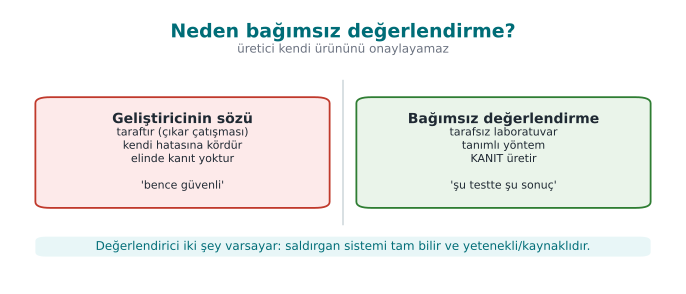
RTEÜ Bilgisayar Mühendisliği · 2026-2027 Güz
CEN429 Güvenli Programlama · Hafta 12
"Benim kodum güvenli" yetmez
Geliştirici kendi koduna kör olabilir.
Menfaat çatışması: "ürünüm güvenli" demek istersiniz.
Bu yüzden üçüncü taraf doğrulaması gerekir.
RTEÜ Bilgisayar Mühendisliği · 2026-2027 Güz
CEN429 Güvenli Programlama · Hafta 12
Güven neye dayanır?
Söze değil, kanıta ve teste .
Bağımsız laboratuvar: tarafsız, akredite, uzman.
Sonuç: bir sertifika ya da bir bulgu listesi .
RTEÜ Bilgisayar Mühendisliği · 2026-2027 Güz
CEN429 Güvenli Programlama · Hafta 12
Değerlendiricinin iki varsayımı
Beyaz kutu: tüm kaynak koda ve belgelere erişimi var.Platform güvenilmez: ürünün çalıştığı ortam saldırgana açık.
RTEÜ Bilgisayar Mühendisliği · 2026-2027 Güz
CEN429 Güvenli Programlama · Hafta 12
Bu varsayımların sonucu
Bir korumanın var olması yetmez.
Değerlendirici sorar: ne kadar kolay aşılıyor?
Tek bir korumayı değil,
Korumaların birlikte aşılmasının süresini ölçer.
RTEÜ Bilgisayar Mühendisliği · 2026-2027 Güz
CEN429 Güvenli Programlama · Hafta 12
İyi tasarımda saldırgan zorlanır
Tek koruma → tek adımda aşılır.
Katmanlı koruma → saldırgan katmanları zincirlemek zorunda.
Bu, 9 ve 11. haftadaki "katmanlı savunma" fikrinin değerlendirmedeki karşılığı.
RTEÜ Bilgisayar Mühendisliği · 2026-2027 Güz
CEN429 Güvenli Programlama · Hafta 12
Standartlar manzarası
RTEÜ Bilgisayar Mühendisliği · 2026-2027 Güz
CEN429 Güvenli Programlama · Hafta 12
Standartlar haritası — şema
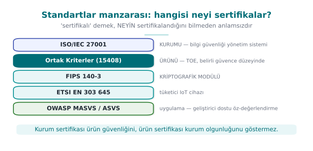
RTEÜ Bilgisayar Mühendisliği · 2026-2027 Güz
CEN429 Güvenli Programlama · Hafta 12
Neden birçok standart var?
Her standart farklı bir şeyi güvence altına alır:
kurumu mu, ürünü mü, kripto modülünü mü?
hangi alan (IoT, ödeme, mobil)?
Projeniz hangisine yakınsa, hangi testleri önceliklendireceğinizi bilirsiniz.
RTEÜ Bilgisayar Mühendisliği · 2026-2027 Güz
CEN429 Güvenli Programlama · Hafta 12
ISO/IEC 27001
Neyi: kurumu (süreçleri) sertifikalar.Ürünü değil, kurumun bilgi güvenliği yönetimini.
Test yerine kontrol kanıtı ister.
RTEÜ Bilgisayar Mühendisliği · 2026-2027 Güz
CEN429 Güvenli Programlama · Hafta 12
Ortak Kriterler (ISO/IEC 15408)
Neyi: ürünü sertifikalar.Kaynak inceleme + zafiyet analizi + sızma testi + saldırı potansiyeli .
Derinlik EAL ile artar (13. hafta).
RTEÜ Bilgisayar Mühendisliği · 2026-2027 Güz
CEN429 Güvenli Programlama · Hafta 12
FIPS 140-3
Neyi: kriptografik modülü .Algoritma doğrulama, kendini test.
Yalnız modülü kapsar; uygulamanın tamamını değil (13. hafta).
RTEÜ Bilgisayar Mühendisliği · 2026-2027 Güz
CEN429 Güvenli Programlama · Hafta 12
ETSI EN 303 645
Neyi: IoT temel güvenlik gereksinimleri.Hafif, geniş kapsamlı bir taban.
Ör. "hassas parametreleri güvenle sakla".
RTEÜ Bilgisayar Mühendisliği · 2026-2027 Güz
CEN429 Güvenli Programlama · Hafta 12
EMVCo / PCI
Neyi: ödeme ürünleri.İşlevsel uygunluk + laboratuvar sızma testi + saldırı potansiyeli.
Sıkı ve ayrıntılı.
RTEÜ Bilgisayar Mühendisliği · 2026-2027 Güz
CEN429 Güvenli Programlama · Hafta 12
OWASP MASVS + MASTG
MASVS: mobil uygulama güvenlik gereksinimleri .MASTG: bunları sınamak için test rehberi .Projeniz için en uygulanabilir rehber.
RTEÜ Bilgisayar Mühendisliği · 2026-2027 Güz
CEN429 Güvenli Programlama · Hafta 12
Standartlar · tek tablo
Standart
Neyi sertifikalar
ISO/IEC 27001
Kurumu (süreç)
Ortak Kriterler
Ürünü (EAL)
FIPS 140-3
Kripto modülü
ETSI EN 303 645
IoT temel
EMVCo / PCI
Ödeme
OWASP MASVS/MASTG
Mobil uygulama
RTEÜ Bilgisayar Mühendisliği · 2026-2027 Güz
CEN429 Güvenli Programlama · Hafta 12
Kurum mu, ürün mü? (sık karışır)
ISO/IEC 27001: kurum.Ortak Kriterler: ürün.
Bir kurum 27001'li olabilir ama ürünü değerlendirilmemiş olabilir; tersi de doğru.
RTEÜ Bilgisayar Mühendisliği · 2026-2027 Güz
CEN429 Güvenli Programlama · Hafta 12
Bölüm 1 — kısa sınama
Neden geliştiricinin "güvenli" demesi yetmez?
Değerlendiricinin iki varsayımı?
ISO 27001 ile Ortak Kriterler neyi ayrı sertifikalar?
RTEÜ Bilgisayar Mühendisliği · 2026-2027 Güz
CEN429 Güvenli Programlama · Hafta 12
Bölüm 1 — cevaplar
Geliştirici taraf tır (çıkar çatışması), kendi hatalarına kör dür, elinde kanıt yoktur. Bağımsız değerlendirici kanıta dayalı doğrular.
(1) Saldırgan sistemi tam bilir (Kerckhoffs), (2) saldırgan yetenekli ve kaynaklı dır. En kötü durumu varsay.
ISO 27001 kurumu/süreci (bilgi güvenliği yönetimi), Ortak Kriterler ürünü (TOE) belli güvence düzeyinde sertifikalar.
RTEÜ Bilgisayar Mühendisliği · 2026-2027 Güz
CEN429 Güvenli Programlama · Hafta 12
2. Değerlendirme süreci: 13 adım
RTEÜ Bilgisayar Mühendisliği · 2026-2027 Güz
CEN429 Güvenli Programlama · Hafta 12
Değerlendirme süreci — şema
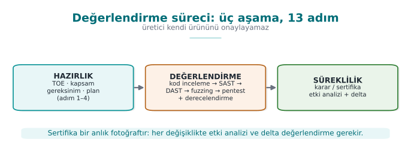
RTEÜ Bilgisayar Mühendisliği · 2026-2027 Güz
CEN429 Güvenli Programlama · Hafta 12
Üç aşama
Süreç üç aşamaya ayrılır:
Hazırlık (1–4)Değerlendirme (5–8)Sonuç ve süreklilik (9–13)
Şimdi tek tek.
RTEÜ Bilgisayar Mühendisliği · 2026-2027 Güz
CEN429 Güvenli Programlama · Hafta 12
Hazırlık (adım 1–4)
RTEÜ Bilgisayar Mühendisliği · 2026-2027 Güz
CEN429 Güvenli Programlama · Hafta 12
Hazırlık adımları — şema
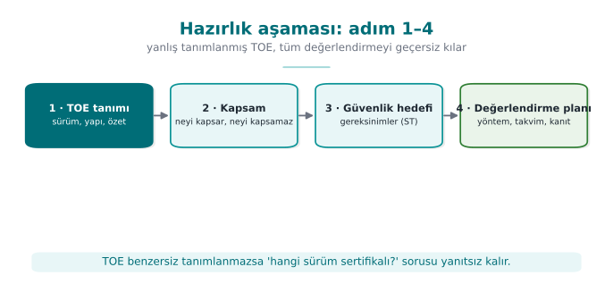
RTEÜ Bilgisayar Mühendisliği · 2026-2027 Güz
CEN429 Güvenli Programlama · Hafta 12
Adım 1 · Değerlendirme hedefi (TOE)
Değerlendirilecek şey benzersiz tanımlanır.
Sürüm numarası yetmez : ikili + kaynak + özet değeri/etiket.
Kapsam dışı bileşenler yazılır.
Projede: S0, S1 (sürüm kimliği, 1. hafta).
RTEÜ Bilgisayar Mühendisliği · 2026-2027 Güz
CEN429 Güvenli Programlama · Hafta 12
TOE kimliği — şema
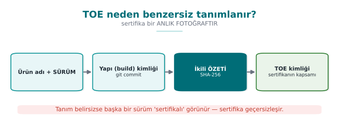
RTEÜ Bilgisayar Mühendisliği · 2026-2027 Güz
CEN429 Güvenli Programlama · Hafta 12
Adım 1 · Neden benzersiz?
Rapor yalnız incelenen ikili için geçerlidir.
"v1.2" iki farklı derlemeyi işaret edebilir.
Özet değeri (hash), tam olarak hangi dosya olduğunu sabitler.
RTEÜ Bilgisayar Mühendisliği · 2026-2027 Güz
CEN429 Güvenli Programlama · Hafta 12
Adım 2 · Belgelerin teslimi
Kaynak kod, API belgesi, güvenlik kılavuzu .
Hata ayıklama ve sürüm derlemeleri.
Güvenli bir kanalla teslim edilir.
Projede: deponuz + kılavuzunuz.
RTEÜ Bilgisayar Mühendisliği · 2026-2027 Güz
CEN429 Güvenli Programlama · Hafta 12
Adım 3 · Gereksinim şablonu
Standardın numaralı gereksinimleri.
Her biri için: metin, test kapsamı , geliştiricinin uyum gerekçesi + belge referansı .
Durum: karşılandı / devredildi / karşılanmadı.
Projede: S17 uyum matrisi (13. hafta).
RTEÜ Bilgisayar Mühendisliği · 2026-2027 Güz
CEN429 Güvenli Programlama · Hafta 12
Adım 4 · Atölye
Hangi önlem hangi gereksinimi karşılıyor?
Eksikler nasıl kapatılacak?
Belge güncelleme planı çıkar.
RTEÜ Bilgisayar Mühendisliği · 2026-2027 Güz
CEN429 Güvenli Programlama · Hafta 12
Değerlendirme (adım 5–8)
RTEÜ Bilgisayar Mühendisliği · 2026-2027 Güz
CEN429 Güvenli Programlama · Hafta 12
Adım 5 · Kaynak kod incelemesi
Bütün kaynak, beyaz kutu bağlamında incelenir.
Tehlikeli kalıplar, yanlış kripto, sızıntı noktaları.
Projede: 4. hafta CERT, statik analiz.
RTEÜ Bilgisayar Mühendisliği · 2026-2027 Güz
CEN429 Güvenli Programlama · Hafta 12
Adım 5 · Değerlendirici neye bakar?
Kripto kullanımı doğru mu? Anahtar nereden/nereye?
Girdi doğrulama, bellek (sınır, taşma, UAF).
Günlükte/hatalarda sır sızıntısı.
Denetim atlama yolları.
RTEÜ Bilgisayar Mühendisliği · 2026-2027 Güz
CEN429 Güvenli Programlama · Hafta 12
Adım 6 · Zafiyet analizi
Varlıklar ve anahtar hiyerarşisi çıkarılır.
Her varlık için: "nerede, hangi halde açığa çıkıyor?"
Çıktı: bulgu listesi + sızma testi planı .
Projede: S4, S5, S16.
RTEÜ Bilgisayar Mühendisliği · 2026-2027 Güz
CEN429 Güvenli Programlama · Hafta 12
Adım 7 · Sızma testi
Plandaki her test, sekiz başlıklı şablonla yürütülür.
Her bulgu saldırı potansiyeliyle derecelendirilir.
Çıktı: test sonuç tabloları.
Projede: S16.
RTEÜ Bilgisayar Mühendisliği · 2026-2027 Güz
CEN429 Güvenli Programlama · Hafta 12
Sızma testi planı — şema
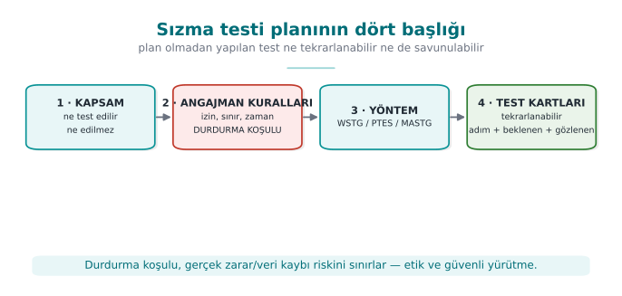
RTEÜ Bilgisayar Mühendisliği · 2026-2027 Güz
CEN429 Güvenli Programlama · Hafta 12
Adım 8 · İşlevsel uygunluk
Ürünün standart işlevleri (ör. ödeme akışları) şemanın test paketiyle sınanır.
Çıktı: yürütme raporu.
Projede: birim testleri.
RTEÜ Bilgisayar Mühendisliği · 2026-2027 Güz
CEN429 Güvenli Programlama · Hafta 12
Sonuç ve süreklilik (adım 9–13)
RTEÜ Bilgisayar Mühendisliği · 2026-2027 Güz
CEN429 Güvenli Programlama · Hafta 12
Adım 9 · Bulgular ve düzeltmeler
Her bulgu için laboratuvar öneri , geliştirici aksiyon üretir.
Bazı bulgular "güvenlik sorunu değil, iyi uygulama önerisi" olarak kapanır.
Projede: 7. hafta bulgu–aksiyon listesi.
RTEÜ Bilgisayar Mühendisliği · 2026-2027 Güz
CEN429 Güvenli Programlama · Hafta 12
Bulgu döngüsü — şema
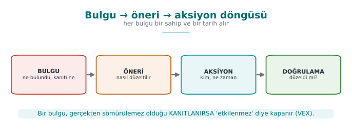
RTEÜ Bilgisayar Mühendisliği · 2026-2027 Güz
CEN429 Güvenli Programlama · Hafta 12
Adım 10 · Güvenlik etki analizi
Düzeltmeler yeni sürüm doğurunca:
değişiklik dizini (yeni özellik / iyileştirme / hata düzeltme)
etkilenen dosyalar
güvenlik etkisi
Projede: S13, değişiklik yönetimi.
RTEÜ Bilgisayar Mühendisliği · 2026-2027 Güz
CEN429 Güvenli Programlama · Hafta 12
Etki analizi ↔ delta — şema
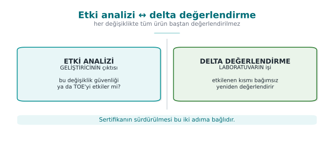
RTEÜ Bilgisayar Mühendisliği · 2026-2027 Güz
CEN429 Güvenli Programlama · Hafta 12
Adım 11 · Delta değerlendirme
Yalnız değişen kısım yeniden değerlendirilir.
Laboratuvar ister: işaretli belgeler, etki analizi, dosya listesi, yeni TOE kimliği .
RTEÜ Bilgisayar Mühendisliği · 2026-2027 Güz
CEN429 Güvenli Programlama · Hafta 12
Adım 12 · Ödünleşim ve kalan risk
Her korumanın maliyeti ölçülür.
Kararlar gerekçelendirilir.
Kalan risk açıkça yazılır. Projede: 1. hafta ödünleşim kaydı.
RTEÜ Bilgisayar Mühendisliği · 2026-2027 Güz
CEN429 Güvenli Programlama · Hafta 12
Adım 13 · Değişiklik yönetimi
Temel çizgi → talep → sınıflandırma → onay → geliştirme ve test → yayın → doğrulama.
RTEÜ Bilgisayar Mühendisliği · 2026-2027 Güz
CEN429 Güvenli Programlama · Hafta 12
13 adım · tek bakış
Hazırlık: 1 TOE · 2 belge · 3 gereksinim şablonu · 4 atölyeDeğerlendirme: 5 kod inceleme · 6 zafiyet · 7 sızma · 8 işlevselSonuç: 9 bulgu · 10 etki · 11 delta · 12 kalan risk · 13 değişiklik
RTEÜ Bilgisayar Mühendisliği · 2026-2027 Güz
CEN429 Güvenli Programlama · Hafta 12
Kılavuz nereye oturuyor?
Bu dersin "Sahada nasıl?" notlarının kaynağı olan güvenlik kılavuzu = 2. adımda teslim edilen belge .
Birincil okuru: laboratuvar .
Her bölümü bir gereksinim bloğuyla açar ("gereksinim — durum").
Projenizdeki kılavuz, bunun küçültülmüş hâli.
RTEÜ Bilgisayar Mühendisliği · 2026-2027 Güz
CEN429 Güvenli Programlama · Hafta 12
Bölüm 2 — kısa sınama
Üç aşama ve kabaca hangi adımlar?
TOE neden benzersiz tanımlanır?
Etki analizi ile delta değerlendirme ilişkisi?
RTEÜ Bilgisayar Mühendisliği · 2026-2027 Güz
CEN429 Güvenli Programlama · Hafta 12
Bölüm 2 — cevaplar
Hazırlık (TOE, kapsam, gereksinim, plan · 1–4), Yürütme (yöntem uygula, test, derecelendir), Sonuç (rapor, uyum, karar, delta bakımı).Neyin sertifikalı olduğunu kesin sabitlemek : sürüm, yapı, özet, yapılandırma. Aksi halde başka sürüm "sertifikalı" görünür.
Değişiklikte önce etki analizi (güvenliği etkiler mi?); etkiliyorse tam değil yalnız delta (değişen kısım) yeniden değerlendirilir.
RTEÜ Bilgisayar Mühendisliği · 2026-2027 Güz
CEN429 Güvenli Programlama · Hafta 12
3. Zafiyet değerlendirmesi yöntemleri
RTEÜ Bilgisayar Mühendisliği · 2026-2027 Güz
CEN429 Güvenli Programlama · Hafta 12
Değerlendirme yöntemleri — şema
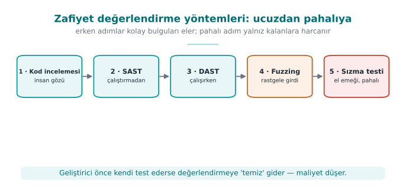
RTEÜ Bilgisayar Mühendisliği · 2026-2027 Güz
CEN429 Güvenli Programlama · Hafta 12
Amaç
Süreçteki 5–6. adımlar bir dizi yöntemi doğru sırada kullanmayı gerektirir.
Soru: "Kendi ürünümü teslim etmeden önce nasıl sınarım?"
RTEÜ Bilgisayar Mühendisliği · 2026-2027 Güz
CEN429 Güvenli Programlama · Hafta 12
Doğru sıra: ucuzdan pahalıya
Kaynak kod incelemesi (el ile)
Statik analiz (SAST)
Dinamik analiz (DAST) + sanitizer
Fuzzing
Sızma testi
Ucuz + geniş → pahalı + derin.
RTEÜ Bilgisayar Mühendisliği · 2026-2027 Güz
CEN429 Güvenli Programlama · Hafta 12
Neden bu sıra?
SAST ucuz, geniş tarar; ama yanlış pozitif üretir.El ile inceleme pahalı; ama bağlamı görür.Fuzzing çalıştırma ister; akla gelmeyeni bulur.Sızma testi en pahalı; en son.
Önce ucuz yöntemlerle "kolay" bulguları temizle → pentest gerçek sorunlara odaklansın.
RTEÜ Bilgisayar Mühendisliği · 2026-2027 Güz
CEN429 Güvenli Programlama · Hafta 12
Yöntem 1 · Kaynak kod incelemesi
Otomatik araçların kaçırdığı mantık hatalarını bulur.
İnsan gözü, bağlamı ve niyeti görür.
RTEÜ Bilgisayar Mühendisliği · 2026-2027 Güz
CEN429 Güvenli Programlama · Hafta 12
Kod incelemesi · nereye bakılır? (1)
Kripto: doğru algoritma/kip/dolgu mu? Anahtar nereden/nereye/ne zaman silinir? (3, 10, 11)
RTEÜ Bilgisayar Mühendisliği · 2026-2027 Güz
CEN429 Güvenli Programlama · Hafta 12
Kod incelemesi · nereye bakılır? (2)
Girdi/bellek: sınır denetimi, tamsayı taşması, biçim dizisi, UAF (4. hafta CERT).Sızıntı: günlükte hassas veri, hatada iç durum.Atlama: bir denetimin tek dalla/tek dönüşle atlanabilmesi (9. hafta).
RTEÜ Bilgisayar Mühendisliği · 2026-2027 Güz
CEN429 Güvenli Programlama · Hafta 12
Yöntem 2 · Statik analiz (SAST)
Kaynağı çalıştırmadan tarar.
Bellek hataları, tehlikeli çağrılar, kalıplar.
Hızlı; ama yanlış pozitifleri ele almak gerekir.
RTEÜ Bilgisayar Mühendisliği · 2026-2027 Güz
CEN429 Güvenli Programlama · Hafta 12
Yöntem 3 · Dinamik analiz (DAST)
Programı çalıştırırken sınar.
Sanitizer'lar (ASan/UBSan) bellek erişim hatalarını, tanımsız davranışı yakalar.
RTEÜ Bilgisayar Mühendisliği · 2026-2027 Güz
CEN429 Güvenli Programlama · Hafta 12
Yöntem 4 · Fuzzing
Program beklenmeyen girdilerle beslenir.
Çökme/bozulma yolları bulunur.
İnsanın düşünmediği durumları ortaya çıkarır.
RTEÜ Bilgisayar Mühendisliği · 2026-2027 Güz
CEN429 Güvenli Programlama · Hafta 12
Yöntem 5 · Sızma testi
Yukarıdakileri birleştirir , saldırgan bakışıyla aşılabilirliği dener.
En pahalı; en son.
bölümde ayrıntılı planlayacağız.
RTEÜ Bilgisayar Mühendisliği · 2026-2027 Güz
CEN429 Güvenli Programlama · Hafta 12
Kritik nokta: geliştirici önce kendi yapar
Bu araçları geliştirici de çalıştırmalı ve sonuçlarını (S16) sunmalı.
Değerlendirici için büyük fark:
"kimse sınamamış" vs.
"şu araçlar çalıştırılmış, şu bulgular kapatılmış".
Bu, 4. haftadaki güvenli derleme hattının (CI'da SAST + sanitizer + fuzz) karşılığı.
RTEÜ Bilgisayar Mühendisliği · 2026-2027 Güz
CEN429 Güvenli Programlama · Hafta 12
Standartların istediği testler
RTEÜ Bilgisayar Mühendisliği · 2026-2027 Güz
CEN429 Güvenli Programlama · Hafta 12
Her standart farklı test vurgular
Projeniz hangi aileye yakınsa, önce onun beklediği testleri yapın.
RTEÜ Bilgisayar Mühendisliği · 2026-2027 Güz
CEN429 Güvenli Programlama · Hafta 12
Ortak Kriterler
Kaynak inceleme + zafiyet analizi + sızma testi.
Saldırı potansiyeli derecelendirme.Derinlik EAL ile artar.
RTEÜ Bilgisayar Mühendisliği · 2026-2027 Güz
CEN429 Güvenli Programlama · Hafta 12
FIPS 140-3
Kriptografik modül testleri.
Algoritma doğrulama, kendini test.
Yalnız modülü kapsar.
RTEÜ Bilgisayar Mühendisliği · 2026-2027 Güz
CEN429 Güvenli Programlama · Hafta 12
EMVCo / PCI
İşlevsel uygunluk + laboratuvar sızma testi .
Saldırı potansiyeli puanlaması.
Ödeme alanı; sıkı.
RTEÜ Bilgisayar Mühendisliği · 2026-2027 Güz
CEN429 Güvenli Programlama · Hafta 12
OWASP MASVS / MASTG
Mobil uygulama: statik + dinamik test.
Projeniz için en uygulanabilir rehber.
RTEÜ Bilgisayar Mühendisliği · 2026-2027 Güz
CEN429 Güvenli Programlama · Hafta 12
Standartlar · test beklentisi
Standart
Ağırlıklı test
ISO/IEC 27001
Süreç/yönetim denetimi
Ortak Kriterler
İnceleme + zafiyet + sızma + saldırı potansiyeli
FIPS 140-3
Kripto modülü testi
ETSI EN 303 645
Temel gereksinim doğrulama
EMVCo / PCI
İşlevsel + sızma + saldırı potansiyeli
MASVS/MASTG
Mobil statik + dinamik
RTEÜ Bilgisayar Mühendisliği · 2026-2027 Güz
CEN429 Güvenli Programlama · Hafta 12
Test yöntemi rehberleri
Sızma testinin nasıl yapılacağı için olgun açık rehberler var:
OWASP WSTG (web)OWASP MASTG (mobil)PTES , NIST SP 800-115 (genel süreç)
Bunlar "saldırı tarifi" değil, metodoloji — sonucu tekrarlanabilir/karşılaştırılabilir yapar.
RTEÜ Bilgisayar Mühendisliği · 2026-2027 Güz
CEN429 Güvenli Programlama · Hafta 12
Bölüm 3 — kısa sınama
Yöntemleri neden ucuzdan pahalıya sıralarız?
SAST'ın zayıf yanı ne?
Geliştiricinin önce kendi test etmesi neden önemli?
RTEÜ Bilgisayar Mühendisliği · 2026-2027 Güz
CEN429 Güvenli Programlama · Hafta 12
Bölüm 3 — cevaplar
Ucuz/otomatik yöntemler (SAST/DAST) kolay bulguları erken eler ; pahalı el emeği yalnız kalanlar için harcanır → verimli.
SAST kodu çalıştırmaz → yüksek yanlış pozitif , çalışma-anı/yapılandırma/iş-mantığı açığını göremez, bağlamı bilmez.Kolay bulguları ucuza kapatır (değerlendiriciye temiz gider), maliyeti/gecikmeyi düşürür → değerlendirme derin sorunlara odaklanır.
RTEÜ Bilgisayar Mühendisliği · 2026-2027 Güz
CEN429 Güvenli Programlama · Hafta 12
4. Saldırı potansiyeli ve derecelendirme
RTEÜ Bilgisayar Mühendisliği · 2026-2027 Güz
CEN429 Güvenli Programlama · Hafta 12
"Var/yok" değil, "ne kadar zor?"
Bir korumanın var olması yetmez; ne kadar kolay aşıldığı ölçülür.
Ortak Kriterler ve ödeme şemaları bunu saldırı potansiyeli ile yapar.
Bu, 9. haftadaki "gizlemeyi ölçme" (güç/dayanıklılık) çerçevesinin resmî hâli.
RTEÜ Bilgisayar Mühendisliği · 2026-2027 Güz
CEN429 Güvenli Programlama · Hafta 12
Soru: "kırmak için ne gerekti?"
Bir bulgunun ciddiyeti, bu soruya verilen yanıtla belirlenir.
Beş–altı faktörle puanlarız; puanlar toplanır; toplam bir dirençlik düzeyine eşlenir.
RTEÜ Bilgisayar Mühendisliği · 2026-2027 Güz
CEN429 Güvenli Programlama · Hafta 12
Faktör 1 · Geçen süre
Saldırı ne kadar sürdü?
Düşük puan: bir gün. Yüksek puan: aylar.
RTEÜ Bilgisayar Mühendisliği · 2026-2027 Güz
CEN429 Güvenli Programlama · Hafta 12
Faktör 2 · Uzmanlık
Ne düzeyde beceri gerekti?
Düşük: sıradan kullanıcı. Yüksek: konu uzmanı.
RTEÜ Bilgisayar Mühendisliği · 2026-2027 Güz
CEN429 Güvenli Programlama · Hafta 12
Faktör 3 · Hedef bilgisi
Ürün hakkında ne bilmek gerekti?
Düşük: kamuya açık bilgi. Yüksek: iç/gizli belgeler.
RTEÜ Bilgisayar Mühendisliği · 2026-2027 Güz
CEN429 Güvenli Programlama · Hafta 12
Faktör 4 · Fırsat penceresi
Ne kadar erişim/deneme gerekti?
Düşük: sınırsız/uzaktan. Yüksek: kısıtlı fiziksel erişim.
RTEÜ Bilgisayar Mühendisliği · 2026-2027 Güz
CEN429 Güvenli Programlama · Hafta 12
Faktör 5 · Ekipman
Hangi araçlar gerekti?
Düşük: standart, ücretsiz. Yüksek: özel, pahalı.
RTEÜ Bilgisayar Mühendisliği · 2026-2027 Güz
CEN429 Güvenli Programlama · Hafta 12
Faktörler · tek tablo
Faktör
Düşük
Yüksek
Geçen süre
Bir gün
Aylar
Uzmanlık
Sıradan
Uzman
Hedef bilgisi
Kamuya açık
Gizli belge
Fırsat penceresi
Sınırsız/uzak
Kısıtlı fiziksel
Ekipman
Ücretsiz
Özel/pahalı
RTEÜ Bilgisayar Mühendisliği · 2026-2027 Güz
CEN429 Güvenli Programlama · Hafta 12
Yorum: düşük toplam = ciddi bulgu
Yüksek toplam → saldırı zor → koruma iyi.Düşük toplam (sıradan kullanıcı, bir saat, ücretsiz araç) → ciddi bulgu .
Mantık 9. haftadaki dört ölçütle aynı.
RTEÜ Bilgisayar Mühendisliği · 2026-2027 Güz
CEN429 Güvenli Programlama · Hafta 12
İşlenmiş örnek (sentetik)
"Sürüm derlemesinde bir lisans denetimi, ücretsiz bir tersine derleyiciyle, orta düzey kullanıcının bir saatte
RTEÜ Bilgisayar Mühendisliği · 2026-2027 Güz
CEN429 Güvenli Programlama · Hafta 12
Örnek · puanlama
Süre: düşük · uzmanlık: orta · bilgi: kamuya açık · ekipman: ücretsiz
→ düşük saldırı potansiyeli → ciddi bulgu
Öneri: opak boolean + rastgele çıkış (9. hafta) + sunucu denetimi.
RTEÜ Bilgisayar Mühendisliği · 2026-2027 Güz
CEN429 Güvenli Programlama · Hafta 12
CVSS
RTEÜ Bilgisayar Mühendisliği · 2026-2027 Güz
CEN429 Güvenli Programlama · Hafta 12
Saldırı potansiyeli ↔ CVSS — şema
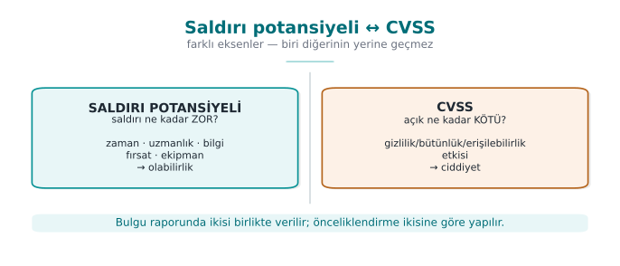
RTEÜ Bilgisayar Mühendisliği · 2026-2027 Güz
CEN429 Güvenli Programlama · Hafta 12
CVSS ne ekler?
Saldırı potansiyeli: "kırmak ne kadar zor ?"
CVSS: "bu zafiyetin etkisi ne kadar büyük?"
İkisi birbirini tamamlar.
RTEÜ Bilgisayar Mühendisliği · 2026-2027 Güz
CEN429 Güvenli Programlama · Hafta 12
CVSS · olabilirlik vs etki
Biri olabilirliği (saldırının zorluğu), öteki etkiyi (gizlilik/bütünlük/erişilebilirlik kaybı) tartar.
Raporda çoğunlukla ikisi birden verilir.
Önceliklendirme buna göre.
RTEÜ Bilgisayar Mühendisliği · 2026-2027 Güz
CEN429 Güvenli Programlama · Hafta 12
Bulgu → öneri → aksiyon
RTEÜ Bilgisayar Mühendisliği · 2026-2027 Güz
CEN429 Güvenli Programlama · Hafta 12
Değerlendirme bir döngüdür
"Geçti/kaldı" damgası değil, bir iyileştirme döngüsü .
Her bulgu için dört adım:
RTEÜ Bilgisayar Mühendisliği · 2026-2027 Güz
CEN429 Güvenli Programlama · Hafta 12
Dört adım
Bulgu: laboratuvar ne buldu (kanıtla, tekrarlanabilir).Öneri: önerilen düzeltme yönü.Aksiyon: geliştiricinin ne yaptığı (ya da neden yapmadığı).Kapanış: kimi bulgu "açık değil, iyi uygulama önerisi" olarak kapanır.
Bu döngü → vize sonrası bulgu–aksiyon listesinin kaynağı (7. hafta).
RTEÜ Bilgisayar Mühendisliği · 2026-2027 Güz
CEN429 Güvenli Programlama · Hafta 12
Etki analizi ve delta değerlendirme
RTEÜ Bilgisayar Mühendisliği · 2026-2027 Güz
CEN429 Güvenli Programlama · Hafta 12
Neden bunlara ihtiyaç var?
Düzeltmeler yeni sürüm doğurur.
Her şeyi baştan değerlendirmek pahalıdır .
İki belge devreye girer (adım 10–11).
RTEÜ Bilgisayar Mühendisliği · 2026-2027 Güz
CEN429 Güvenli Programlama · Hafta 12
Güvenlik etki analizi
Değişiklikleri sınıflandırır: yeni özellik / iyileştirme / hata düzeltme.
Etkilenen dosyaları listeler.
Her değişikliğin güvenlik etkisini yazar.
Geliştiricinin çıktısı.
RTEÜ Bilgisayar Mühendisliği · 2026-2027 Güz
CEN429 Güvenli Programlama · Hafta 12
Delta değerlendirme
Bu belgeye dayanarak yalnız değişen kısmı yeniden değerlendirir.
İster: işaretli belgeler, değişiklik dizini, dosya listesi, yeni TOE kimliği .
Laboratuvarın işi.
RTEÜ Bilgisayar Mühendisliği · 2026-2027 Güz
CEN429 Güvenli Programlama · Hafta 12
⚠️ İkisini karıştırma
Etki analizi: değişikliğin etkisini belgeler (geliştirici).Delta değerlendirme: yalnız değişeni yeniden değerlendirir (laboratuvar).
Sürüm kimliği/özet tutarsızsa delta yapılamaz (değerlendirilen ürün belirsizleşir).
RTEÜ Bilgisayar Mühendisliği · 2026-2027 Güz
CEN429 Güvenli Programlama · Hafta 12
Bölüm 4 — kısa sınama
Saldırı potansiyelinin beş faktörü?
Düşük saldırı potansiyeli neden ciddi bulgu?
Saldırı potansiyeli ile CVSS neyi ölçer?
Etki analizi kimin, delta kimin işi?
RTEÜ Bilgisayar Mühendisliği · 2026-2027 Güz
CEN429 Güvenli Programlama · Hafta 12
Bölüm 4 — cevaplar
Geçen zaman · uzmanlık · hedef bilgisi · fırsat (erişim) · ekipman. Az zaman/beceri/araçla sömürülebilir demektir → çok saldırgan yapabilir → geniş, olası tehdit → yüksek risk.Saldırı potansiyeli saldırının zorluğu/maliyetini , CVSS açığın ciddiyet/etkisini ölçer. Farklı eksenler, birlikte kullanılır.Etki analizi geliştiricinin (değişikliğin etkisini o başlatır), delta değerlendirme değerlendiricinin (bağımsız yeniden inceler) işi.
RTEÜ Bilgisayar Mühendisliği · 2026-2027 Güz
CEN429 Güvenli Programlama · Hafta 12
5. Sızma testi planı
RTEÜ Bilgisayar Mühendisliği · 2026-2027 Güz
CEN429 Güvenli Programlama · Hafta 12
Sızma testi neydi?
Yöntemleri saldırgan bakışıyla birleştiren , planlı ve izinli etkinlik.
"Planlı" ve "izinli" isteğe bağlı değil.
Bir plan en az dört başlık içerir.
RTEÜ Bilgisayar Mühendisliği · 2026-2027 Güz
CEN429 Güvenli Programlama · Hafta 12
Başlık 1 · Kapsam (scope)
Neyin test edileceği ve edilmeyeceği açık yazılır.
Hangi ikili/sürüm, hangi bileşenler, hangi ortam (test mi üretim mi), hangi veriler (yalnız sentetik).
Kapsam dışı da yazılır (üçüncü taraf sunucular, gerçek kullanıcı verisi).
RTEÜ Bilgisayar Mühendisliği · 2026-2027 Güz
CEN429 Güvenli Programlama · Hafta 12
Başlık 2 · Angajman kuralları (1)
Yazılı izin ve yetkili imzası.Test penceresi (tarih/saat).
İzin verilen ve yasak yöntemler (ör. hizmet kesintisi yapanlar hariç).
RTEÜ Bilgisayar Mühendisliği · 2026-2027 Güz
CEN429 Güvenli Programlama · Hafta 12
Başlık 2 · Angajman kuralları (2)
Veri kuralı: gerçek kişisel veri yok ; bulgular gizli.
Durdurma koşulu (kill switch): kritik etki görülürse test durur, derhal bildirilir.İletişim ve yükseltme (escalation) noktaları.
RTEÜ Bilgisayar Mühendisliği · 2026-2027 Güz
CEN429 Güvenli Programlama · Hafta 12
Başlık 3 · Yöntem (methodology)
Tanınmış bir metodoloji seç ve ona uy:
mobil: OWASP MASTG/MASVS
web: OWASP WSTG
genel: PTES , NIST SP 800-115
Amaç: sonuç tekrarlanabilir ve karşılaştırılabilir olsun.
RTEÜ Bilgisayar Mühendisliği · 2026-2027 Güz
CEN429 Güvenli Programlama · Hafta 12
Başlık 4 · Test şablonu
Her test aynı sekiz başlıklı kartla yazılır.
Bu kart, projenizin S16 iskeletidir. Şimdi alanları görelim.
RTEÜ Bilgisayar Mühendisliği · 2026-2027 Güz
CEN429 Güvenli Programlama · Hafta 12
Test kartı · alan 1–4
Test kimliği: benzersiz numaraİlgili gereksinim: hangi varlığı/gereksinimi sınıyor (S17 bağı)Amaç: ne doğrulanıyorÖn koşullar: ortam, sürüm, veriler
RTEÜ Bilgisayar Mühendisliği · 2026-2027 Güz
CEN429 Güvenli Programlama · Hafta 12
Test kartı · alan 5–8
Yöntem/adımlar: tekrarlanabilir biçimdeBeklenen sonuç: güvenli davranış ne olmalıGözlenen sonuç: ne oldu (kanıtla)Karar: saldırı potansiyeli + geçti/kaldı + öneri
RTEÜ Bilgisayar Mühendisliği · 2026-2027 Güz
CEN429 Güvenli Programlama · Hafta 12
Test kartı · tek tablo
Alan
İçerik
Kimlik
Benzersiz numara
Gereksinim
S17 ile bağ
Amaç
Ne doğrulanıyor
Ön koşul
Ortam, sürüm, veri
Adımlar
Tekrarlanabilir
Beklenen
Güvenli davranış
Gözlenen
Ne oldu (kanıt)
Karar
Saldırı pot. + geçti/kaldı + öneri
RTEÜ Bilgisayar Mühendisliği · 2026-2027 Güz
CEN429 Güvenli Programlama · Hafta 12
İşlenmiş örnek · test kartı (1)
Kimlik: T-05Gereksinim: yerel veritabanındaki hassas kayıt AEAD ile korunmalı (S17)Amaç: kayıt diskte düz metin olarak bulunmuyor mu?
RTEÜ Bilgisayar Mühendisliği · 2026-2027 Güz
CEN429 Güvenli Programlama · Hafta 12
İşlenmiş örnek · test kartı (2)
Ön koşul: sürüm derlemesi, sentetik kayıt eklenmişAdımlar: uygulamayı çalıştır → kayıt ekle → veritabanı dosyasını strings ile taraBeklenen: düz metin görünmez
RTEÜ Bilgisayar Mühendisliği · 2026-2027 Güz
CEN429 Güvenli Programlama · Hafta 12
İşlenmiş örnek · test kartı (3)
Gözlenen: düz metin görünmedi (yalnız şifreli blob) — kanıt: çıktı ekran görüntüsüKarar: geçti · saldırı potansiyeli yüksek (kolay saldırı başarısız)
Amaç bir açık bulmak değil, doğru kartı yazmayı öğrenmek.
RTEÜ Bilgisayar Mühendisliği · 2026-2027 Güz
CEN429 Güvenli Programlama · Hafta 12
Takım etkinliği (sınıf içi)
Her takım kendi projesinden bir varlık seçer.
Onun için bir test kartı doldurur.
15 dakika; sonra birkaç kart paylaşılır.
RTEÜ Bilgisayar Mühendisliği · 2026-2027 Güz
CEN429 Güvenli Programlama · Hafta 12
Raporlama
RTEÜ Bilgisayar Mühendisliği · 2026-2027 Güz
CEN429 Güvenli Programlama · Hafta 12
İyi rapor = karar verilebilir belge
Bir "kaldınız" listesi değil.
Okuyan kişi ne yapacağına karar verebilmeli.
RTEÜ Bilgisayar Mühendisliği · 2026-2027 Güz
CEN429 Güvenli Programlama · Hafta 12
Rapor bölümleri (1)
Yönetici özeti: teknik olmayan okur için genel durum + en kritik üç bulgu.Yöntem ve kapsam: ne test edildi, ne edilmedi, hangi metodolojiyle.
RTEÜ Bilgisayar Mühendisliği · 2026-2027 Güz
CEN429 Güvenli Programlama · Hafta 12
Rapor bölümleri (2)
Bulgular: her biri kanıt + saldırı potansiyeli + CVSS + öneri.Bulgu–aksiyon tablosu: geliştirici yanıtı, kapanış.Kalan risk: kapatılmayan/devredilen, gerekçesiyle.
RTEÜ Bilgisayar Mühendisliği · 2026-2027 Güz
CEN429 Güvenli Programlama · Hafta 12
Eleştirel okuma alıştırması
Kısa bir bulgu metnini birlikte okuyun:
Saldırı potansiyeli doğru mu derecelendirilmiş?
Öneri uygulanabilir mi?
"Karşılandı" satırının kanıtı var mı?
Bu, 13. haftadaki uyum matrisi okumasının provası.
RTEÜ Bilgisayar Mühendisliği · 2026-2027 Güz
CEN429 Güvenli Programlama · Hafta 12
Bölüm 5 — kısa sınama
Planın dört başlığı?
"Durdurma koşulu" neden var?
Test kartının hangi alanı S17'ye bağlanır?
RTEÜ Bilgisayar Mühendisliği · 2026-2027 Güz
CEN429 Güvenli Programlama · Hafta 12
Bölüm 5 — cevaplar
Kapsam · kurallar (RoE) · yöntem/metodoloji · test kartları (+ durdurma koşulu, raporlama).Gerçek zarar/veri kaybı/kesinti riskini sınırlamak; belirli bir eşikte test durur → güvenli ve etik yürütme.
Test kartının sonuç/karşılanan gereksinim alanı → S17 uyum matrisine kanıt olarak bağlanır.
RTEÜ Bilgisayar Mühendisliği · 2026-2027 Güz
CEN429 Güvenli Programlama · Hafta 12
6. Proje ve kapanış
RTEÜ Bilgisayar Mühendisliği · 2026-2027 Güz
CEN429 Güvenli Programlama · Hafta 12
Proje · S16 (test planı + sonuçları) — 1
1. En kritik iki–üç varlık/gereksinim için sekiz başlıklı test kartları yazın (S17 ile bağlı).
RTEÜ Bilgisayar Mühendisliği · 2026-2027 Güz
CEN429 Güvenli Programlama · Hafta 12
Proje · S16 — 2
2. Yöntem: hangi metodolojiyi (MASTG / WSTG / PTES / NIST SP 800-115) temel aldığınızı belirtin.
RTEÜ Bilgisayar Mühendisliği · 2026-2027 Güz
CEN429 Güvenli Programlama · Hafta 12
Proje · S16 — 3
3. Sonuçlar: testleri çalıştırıp gözlenen sonuçları yazın.
Finalde plan değil, sonuç beklenir.
RTEÜ Bilgisayar Mühendisliği · 2026-2027 Güz
CEN429 Güvenli Programlama · Hafta 12
Proje · S16 — 4, 5
4. Bulgu–aksiyon: vize geri bildirimlerini bir tabloya dökün.
5. Kalan risk: kapatmadığınız riskleri ve gerekçesini yazın.
RTEÜ Bilgisayar Mühendisliği · 2026-2027 Güz
CEN429 Güvenli Programlama · Hafta 12
⚠️ Etik (tekrar)
Test yalnız kendi projeniz ve yetkili olduğunuz sistemlerde.
İzinsiz test suçtur.
Bütün veriler sentetik ; depoda gerçek sır/kişisel veri yok.
RTEÜ Bilgisayar Mühendisliği · 2026-2027 Güz
CEN429 Güvenli Programlama · Hafta 12
Çözümlü kendini sınama
RTEÜ Bilgisayar Mühendisliği · 2026-2027 Güz
CEN429 Güvenli Programlama · Hafta 12
Soru 1
13 adımı üç aşamada özetleyin.
Cevap: Hazırlık (TOE, belge, gereksinim şablonu, atölye) → Değerlendirme (kod inceleme, zafiyet, sızma, işlevsel) → Sonuç (bulgu, etki analizi, delta, kalan risk, değişiklik yönetimi).
RTEÜ Bilgisayar Mühendisliği · 2026-2027 Güz
CEN429 Güvenli Programlama · Hafta 12
Soru 2
Değerlendiricinin iki varsayımı? Sonucu ne?
Cevap: (1) beyaz kutu — tüm kaynak/belge erişimi; (2) platform güvenilmez. Sonuç: korumanın var olması yetmez, ne kadar kolay aşıldığı ölçülür.
RTEÜ Bilgisayar Mühendisliği · 2026-2027 Güz
CEN429 Güvenli Programlama · Hafta 12
Soru 3
Yöntemleri neden ucuzdan pahalıya sıralarız?
Cevap: Ucuz/geniş yöntemler (SAST) kolay bulguları temizler; pahalı/derin yöntem (pentest) böylece gerçek, birleşik sorunlara odaklanır. Zaman ve maliyet verimliliği.
RTEÜ Bilgisayar Mühendisliği · 2026-2027 Güz
CEN429 Güvenli Programlama · Hafta 12
Soru 4
ISO 27001 ile Ortak Kriterler neyi ayrı sertifikalar?
Cevap: ISO 27001 kurumu (süreç), Ortak Kriterler ürünü . Biri diğerini gerektirmez.
RTEÜ Bilgisayar Mühendisliği · 2026-2027 Güz
CEN429 Güvenli Programlama · Hafta 12
Soru 5
Saldırı potansiyelinin beş faktörü? Düşük puan neden ciddi?
Cevap: süre, uzmanlık, hedef bilgisi, fırsat penceresi, ekipman. Düşük toplam = kolay saldırı = ciddi bulgu .
RTEÜ Bilgisayar Mühendisliği · 2026-2027 Güz
CEN429 Güvenli Programlama · Hafta 12
Soru 6
Saldırı potansiyeli ile CVSS neyi ölçer? Neden birlikte?
Cevap: Saldırı potansiyeli olabilirliği (zorluk), CVSS etkiyi (C/I/A kaybı). Önceliklendirme için ikisi birden verilir.
RTEÜ Bilgisayar Mühendisliği · 2026-2027 Güz
CEN429 Güvenli Programlama · Hafta 12
Soru 7
Bulgu–öneri–aksiyon döngüsü. Bir bulgu "açık değil" diye nasıl kapanır?
Cevap: Laboratuvar öneri, geliştirici aksiyon üretir. Bazı bulgular güvenlik açığı değil iyi uygulama önerisi olarak, gerekçeyle kapanır.
RTEÜ Bilgisayar Mühendisliği · 2026-2027 Güz
CEN429 Güvenli Programlama · Hafta 12
Soru 8
Etki analizi ile delta değerlendirme farkı? Kimin işi?
Cevap: Etki analizi değişikliğin etkisini belgeler (geliştirici); delta yalnız değişeni yeniden değerlendirir (laboratuvar).
RTEÜ Bilgisayar Mühendisliği · 2026-2027 Güz
CEN429 Güvenli Programlama · Hafta 12
Soru 9
Sızma testi planının dört başlığı?
Cevap: kapsam, angajman kuralları, yöntem, test şablonu. Her biri sonucu meşru, tekrarlanabilir ve güvenli kılar.
RTEÜ Bilgisayar Mühendisliği · 2026-2027 Güz
CEN429 Güvenli Programlama · Hafta 12
Soru 10
Angajman kurallarında "durdurma koşulu" neden var?
Cevap: Kritik/öngörülmeyen bir etki görülürse test hemen durur ve bildirilir; hasarı ve hukuki riski sınırlar.
RTEÜ Bilgisayar Mühendisliği · 2026-2027 Güz
CEN429 Güvenli Programlama · Hafta 12
Soru 11
Test kartının hangi alanı S17'ye bağlanır?
Cevap: "İlgili gereksinim" alanı — her test bir gereksinime/varlığa bağlanır, uyum matrisiyle (S17) izlenir.
RTEÜ Bilgisayar Mühendisliği · 2026-2027 Güz
CEN429 Güvenli Programlama · Hafta 12
Soru 12
Finalde S16'dan "plan" değil "sonuç" beklenmesi ne demek?
Cevap: Test planı yazmak yetmez; testleri çalıştırıp gözlenen sonuçları ve bulgu–aksiyonu sunmak gerekir.
RTEÜ Bilgisayar Mühendisliği · 2026-2027 Güz
CEN429 Güvenli Programlama · Hafta 12
Terimler sözlüğü (1)
Terim
Anlam
TOE
Değerlendirilen tam nesne (benzersiz)
SAST/DAST
Statik / dinamik test
Fuzzing
Rastgele girdiyle çökme arama
Sızma testi
İzinli, planlı saldırgan-bakışı test
Saldırı potansiyeli
Kırmanın zorluğu
RTEÜ Bilgisayar Mühendisliği · 2026-2027 Güz
CEN429 Güvenli Programlama · Hafta 12
Terimler sözlüğü (2)
Terim
Anlam
CVSS
Zafiyet etki puanı
Bulgu–aksiyon
Laboratuvar önerisi → geliştirici yanıtı
Etki analizi
Değişikliğin güvenlik etkisi (geliştirici)
Delta değerlendirme
Yalnız değişeni yeniden değerlendirme (lab)
Angajman kuralları
Testin izin/kapsam/sınır sözleşmesi
RTEÜ Bilgisayar Mühendisliği · 2026-2027 Güz
CEN429 Güvenli Programlama · Hafta 12
Özet: bu haftanın tek cümlesi
Güvenlik bir iddia değil, bağımsız olarak sınanan ve ölçülen bir niteliktir; korumanın var olması yetmez,ne kadar dayandığı planlı, izinli ve tekrarlanabilir biçimde ölçülür.
RTEÜ Bilgisayar Mühendisliği · 2026-2027 Güz
CEN429 Güvenli Programlama · Hafta 12
Kaynaklar
Güvenli programlama teknik kılavuzu — teslim edilen belge, etki/delta yapısı, gereksinim bloğuOWASP MASVS / MASTG — mobil gereksinim + test rehberiOWASP WSTG — web test rehberiPTES , NIST SP 800-115 — sızma testi metodolojisiOrtak Kriterler (ISO/IEC 15408) + saldırı potansiyeli kılavuzlarıCVSS
RTEÜ Bilgisayar Mühendisliği · 2026-2027 Güz
CEN429 Güvenli Programlama · Hafta 12
Sonraki hafta
13. hafta — Güvenlik gereksinimleri
İyi gereksinim · izlenebilirlik/uyum matrisi · devredilen gereksinimler · CC, FIPS 140-3, ETSI, EMVCo, PCI, MASVS.
RTEÜ Bilgisayar Mühendisliği · 2026-2027 Güz
CEN429 Güvenli Programlama · Hafta 12
Ek A · Uçtan uca mini vaka
RTEÜ Bilgisayar Mühendisliği · 2026-2027 Güz
CEN429 Güvenli Programlama · Hafta 12
Vaka · kurgu
Sentetik bir mobil uygulama: "NotKasa" (yerel şifreli not tutar).
Notları AES ile şifreliyor.
Anahtarı sunucudan indiriyor.
Sürüm derlemesinde günlük kapalı.
Bu ürünü baştan sona değerlendireceğiz.
RTEÜ Bilgisayar Mühendisliği · 2026-2027 Güz
CEN429 Güvenli Programlama · Hafta 12
Adım 1 uygulaması · TOE
TOE: NotKasa v1.0.0, notkasa-1.0.0.apkÖzet (SHA-256): a1b2… (sentetik)
Kaynak: notkasa/ deposu, etiket v1.0.0
Kapsam dışı: sunucu altyapısı
RTEÜ Bilgisayar Mühendisliği · 2026-2027 Güz
CEN429 Güvenli Programlama · Hafta 12
Adım 2–3 · Belge ve gereksinim şablonu
Teslim: kaynak, güvenlik kılavuzu, hem hata ayıklama hem sürüm APK.
Gereksinim şablonu: MASVS maddeleri numaralı; her biri için durum + kanıt referansı.
RTEÜ Bilgisayar Mühendisliği · 2026-2027 Güz
CEN429 Güvenli Programlama · Hafta 12
Adım 5 · Kod incelemesi bulguları (sentetik)
B-01: anahtar bir ara değişkende siliniyor ama tmp tampon silinmemiş (bellekte kalıyor).B-02: hata iletisi çözme hatasında iç ayrıntı sızdırıyor.
RTEÜ Bilgisayar Mühendisliği · 2026-2027 Güz
CEN429 Güvenli Programlama · Hafta 12
Adım 6 · Zafiyet analizi
Varlıklar: not içeriği (C/I), veri anahtarı (C/I), sunucu jetonu.
Soru: her varlık nerede açığa çıkıyor?
Çıktı: bir sızma testi planı (aşağıda).
RTEÜ Bilgisayar Mühendisliği · 2026-2027 Güz
CEN429 Güvenli Programlama · Hafta 12
Adım 7 · Sızma testi kartı (özet)
T-01 düz metin diskte? → geçti (şifreli)T-02 anahtar bellekte kalıyor mu? → kaldı (B-01 doğrulandı)T-03 hata iletisi sızdırıyor mu? → kaldı (B-02)
RTEÜ Bilgisayar Mühendisliği · 2026-2027 Güz
CEN429 Güvenli Programlama · Hafta 12
Adım 7 · T-02 derecelendirme
Süre: düşük · uzmanlık: orta · bilgi: kamuya açık · ekipman: ücretsiz (bellek dökümü)
→ orta-düşük saldırı potansiyeli
CVSS: orta (gizlilik etkisi)
RTEÜ Bilgisayar Mühendisliği · 2026-2027 Güz
CEN429 Güvenli Programlama · Hafta 12
Adım 9 · Bulgu–aksiyon
Bulgu
Öneri
Aksiyon
B-01 anahtar kalıntısı
tmp'yi kullanınca silEklendi (memset benzeri)
B-02 hata sızıntısı
Tek genel hata dön
Düzeltildi
RTEÜ Bilgisayar Mühendisliği · 2026-2027 Güz
CEN429 Güvenli Programlama · Hafta 12
Adım 10–11 · Etki analizi + delta
Düzeltmeler v1.0.1 doğurdu.
Etki analizi: 2 dosya değişti, ikisi de bellek/hata yolu; kripto akışı değişmedi.Delta: yalnız bu iki dosya + yeni TOE kimliği (notkasa-1.0.1.apk) yeniden değerlendirildi.
RTEÜ Bilgisayar Mühendisliği · 2026-2027 Güz
CEN429 Güvenli Programlama · Hafta 12
Adım 12 · Kalan risk
Cihaz köklü ise bellek dökümü hâlâ mümkün.
Telafi: anahtar kısa ömürlü + sunucu risk denetimi.
Açıkça yazıldı.
RTEÜ Bilgisayar Mühendisliği · 2026-2027 Güz
CEN429 Güvenli Programlama · Hafta 12
Vaka · çıkarım
13 adım soyut değil; küçük bir üründe somut .
Değerlendirme bir döngü : bul → düzelt → yeniden değerlendir.
Projeniz bunun küçültülmüş hâli.
RTEÜ Bilgisayar Mühendisliği · 2026-2027 Güz
CEN429 Güvenli Programlama · Hafta 12
Ek B · Daha çok test kartı örneği
RTEÜ Bilgisayar Mühendisliği · 2026-2027 Güz
CEN429 Güvenli Programlama · Hafta 12
Kart · kripto doğrulama
Amaç: notlar gerçekten AEAD ile mi şifreli?Adım: şifreli blobun başlığını/etiketini incele; bozuk etiketli veri reddediliyor mu?Beklenen: bozuk etiket → çözme reddi.
RTEÜ Bilgisayar Mühendisliği · 2026-2027 Güz
CEN429 Güvenli Programlama · Hafta 12
Kart · anahtar yaşam döngüsü
Amaç: anahtar iş bitince siliniyor mu?Adım: işlem sonrası bellek taraması.Beklenen: anahtar baytları bulunmuyor.
RTEÜ Bilgisayar Mühendisliği · 2026-2027 Güz
CEN429 Güvenli Programlama · Hafta 12
Kart · sürüm/hata ayıklama ayrımı
Amaç: sürüm derlemesinde günlük gerçekten kapalı mı?Adım: sürüm APK'da strings ile günlük dizgesi ara.Beklenen: günlük dizgesi yok.
RTEÜ Bilgisayar Mühendisliği · 2026-2027 Güz
CEN429 Güvenli Programlama · Hafta 12
Kart · yükseltme güvenliği
Amaç: eski imzalı sürüm geri yüklenebilir mi?Adım: düşük sürümü yüklemeyi dene.Beklenen: sürüm düşürme reddi.
RTEÜ Bilgisayar Mühendisliği · 2026-2027 Güz
CEN429 Güvenli Programlama · Hafta 12
Kartları yazarken kural
Her kart tekrarlanabilir olmalı (başkası aynı adımı izleyebilmeli).
Her kart bir gereksinime bağlı (S17).
"Gözlenen" alanı kanıtla dolu.
RTEÜ Bilgisayar Mühendisliği · 2026-2027 Güz
CEN429 Güvenli Programlama · Hafta 12
Ek C · Sık yapılan hatalar
RTEÜ Bilgisayar Mühendisliği · 2026-2027 Güz
CEN429 Güvenli Programlama · Hafta 12
Hata · plan var, sonuç yok
Finalde (S16) sonuç beklenir.
"Şunu test edeceğiz" yetmez; "şunu test ettik, şu çıktı".
RTEÜ Bilgisayar Mühendisliği · 2026-2027 Güz
CEN429 Güvenli Programlama · Hafta 12
Hata · kanıtsız "karşılandı"
Uyum matrisinde kanıtsız "karşılandı" = değerlendiricide karşılanmamış sayılır.
Her satıra kanıt referansı.
RTEÜ Bilgisayar Mühendisliği · 2026-2027 Güz
CEN429 Güvenli Programlama · Hafta 12
Hata · sürüm tutarsızlığı
Kılavuz v1.0, kod v1.1 → değerlendirilen ürün belirsiz.
Sürüm kimliği + özet tutarlı olmalı.
RTEÜ Bilgisayar Mühendisliği · 2026-2027 Güz
CEN429 Güvenli Programlama · Hafta 12
Hata · kalan risk boş
Hiçbir ürünün kalan riski sıfır değildir.
Boş "kalan risk" = eksik analiz.
RTEÜ Bilgisayar Mühendisliği · 2026-2027 Güz
CEN429 Güvenli Programlama · Hafta 12
Hata · vize geri bildirimini yok saymak
Bulgu–aksiyon döngüsü sürecin parçası.
Vize bulguları finalde kapatılmış olmalı.
RTEÜ Bilgisayar Mühendisliği · 2026-2027 Güz
CEN429 Güvenli Programlama · Hafta 12
Hata · depoda gerçek veri
Gerçek sır/kişisel veri = ağır bulgu.
Her şey sentetik .
RTEÜ Bilgisayar Mühendisliği · 2026-2027 Güz
CEN429 Güvenli Programlama · Hafta 12
Ek · kapanış
Bu ekler size kendi S16'nızı yazmanın somut kalıbını verdi:
uçtan uca vaka
kart örnekleri
kaçınılacak hatalar
İyi bir test planı, güveni iddiadan kanıta taşır.
RTEÜ Bilgisayar Mühendisliği · 2026-2027 Güz
Konuşma notu: Bu hafta bir ürünün bağımsız bir laboratuvarda nasıl değerlendirildiğini ve bir sızma testinin nasıl planlandığını adım adım görüyoruz.
Konuşma notu: Bu hafta bir ürünün bağımsız bir laboratuvarda nasıl değerlendirildiğini ve kendi ürünümüzün sızma testini nasıl planladığımızı öğreniyoruz. Etik çerçeveyi baştan koyacağız.
Konuşma notu: Bu slaytı atlama. Tüm hafta bu çerçevede.
Konuşma notu: Hiçbir ön bilgi varsaymıyoruz. Bu bölümdeki terimleri tüm hafta kullanacağız.
Konuşma notu: Sonra 13 adımlık süreç.
Konuşma notu: Bir ürünün üçüncü taraf laboratuvarda değerlendirilmesinin genelleştirilmiş hâli. Adım adım gidiyoruz; her adımı projeye bağlıyoruz.
Konuşma notu: Ara sonrası yöntemler ve derecelendirme.
Konuşma notu: Bunları savunmacı gözüyle, "kendi ürünümü teslim etmeden nasıl sınarım?" diye ele alıyoruz.
Konuşma notu: Sonra saldırı potansiyeli ve derecelendirme.
Konuşma notu: Ara sonrası sızma testi planı.
Konuşma notu: "Planlı" ve "izinli" vurgusu isteğe bağlı değil. Kapsamı/kuralı yazılı olmayan test meşru değildir.
Konuşma notu: Sonra proje ve çözümlü sınama.
Konuşma notu: Soruları tek tek, önce öğrenciye sordurup sonra cevabı açın.
Konuşma notu: Sentetik bir "oyuncak ürün"ü baştan sona değerlendiriyoruz; 13 adımı somutlaştırır.